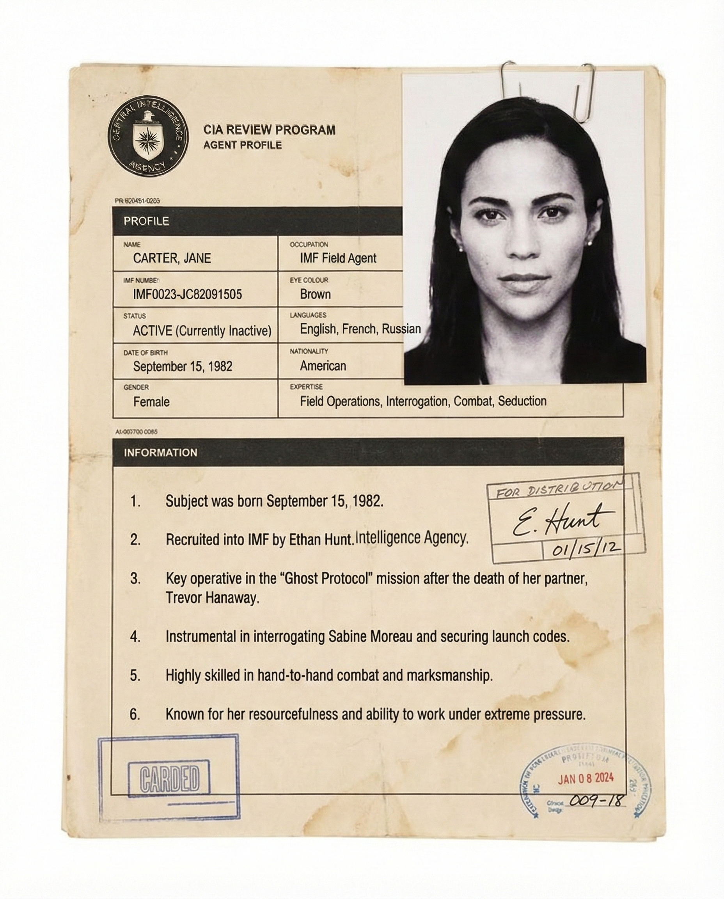
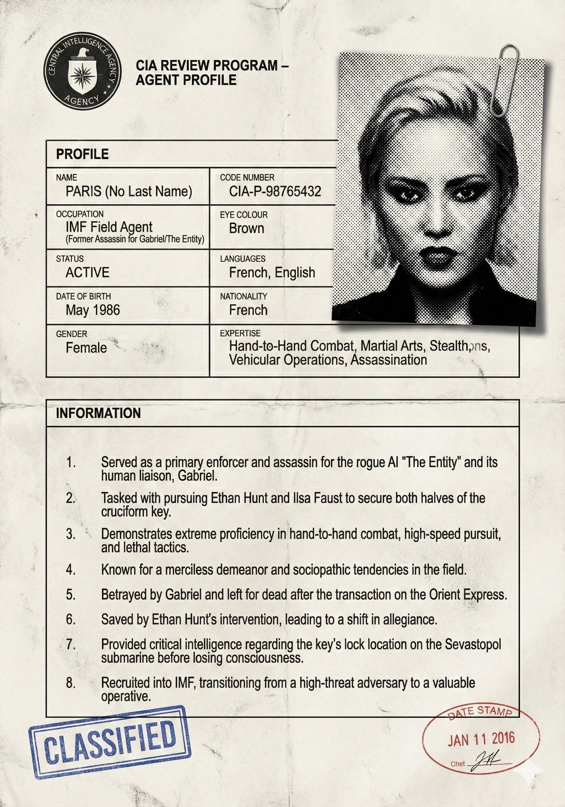

Ethan Matthew Hunt
The agency’s primary field asset and team leader. Known for high-risk tactical improvisation and an unwillingness to sacrifice team members. Standing: Senior Field Agent / Team Leader. Frequently subject to disavowal but consistently reinstated due to mission success. Access Level: Level 5 (Special Access Programs). Clearance to access global intelligence networks and initiate unsanctioned operations. Attributes: Tactical Improvisation ("Batman Gambits") Master Disguise Artist Elite H2H Combatant Expert Driver/Pilot (Rotary & Fixed Wing) Competency Rating: 9.9/10

Benji Dunn
Former laboratory technician turned field agent. Provides real-time logistical support, navigation, and on-site hacking. Standing: Senior Field Agent (Technical/Logistics). Access Level: Level 4. Trusted with mission-critical logistical data and biometric fabrication systems. Attributes: Systems Analysis Polygraphy (Lie Detection/Evasion) Remote Vehicle Operation Mask Fabrication Competency Rating: 8.2/10

Luther Stickell
Expert computer specialist and hacker. Originally a disavowed asset, he is the longest-serving member of the core team and serves as its moral compass. Standing: Senior Computer Specialist. Access Level: Level 4 (Cyber-Warfare). Capable of breaching CIA mainframes, Kremlin security, and sentient algorithmic codes. Attributes: Cyber-Warfare & Cryptography Electronics Engineering Surveillance Countermeasures Competency Rating: 8.8/10

Ilsa Faust
Highly lethal operative originally affiliated with British Intelligence (MI6). Functioned as a deep-cover specialist within rogue syndicates before aligning permanently with the IMF. Standing: Allied Operative / IMF Liaison (Deceased). Access Level: Allied Clearance (Need-to-Know). Attributes: Grandmaster Close Quarters Combat Precision Sniping Deep Cover Infiltration Advanced Motorcycling Competency Rating: 9.5/10

William Brandt
Former field agent who transitioned to an administrative role as an aide to the Secretary before returning to active duty. Acts as the political buffer between the IMF and oversight committees. Standing: Chief Analyst / Field Agent (Resigned). Access Level: Level 5 (Administrative). Full knowledge of IMF funding, structure, and political oversight. Attributes: Political Negotiation Disarmament Defense Intelligence Analysis Competency Rating: 8.5/10

Jane Carter
A fierce and motivated field agent who led her own cell. Specialized in physical combat and social engineering to extract information from high-value targets. Standing: Field Agent. Access Level: Level 4. Attributes: Aggressive Combat Style Social Engineering/Seduction Vehicle Interception Competency Rating: 8.0/10

grace
A master thief and pickpocket recruited during the sentient AI crisis. Initially an unaffiliated third party, she transitioned into a probationary agent role. Standing: Trainee / Provisional Agent. Access Level: Level 1 (Probationary) → Level 4. Attributes: World-Class Sleight of Hand Evasive Driving Adaptability Competency Rating: 7.0/10 (Rising)

Paris
Former enforcer and assassin for the Entity. Known for extreme durability and chaotic combat skills. Defected to the IMF after being betrayed by her superiors. Standing: Allied Asset / Enforcer. Access Level: Allied Asset. Attributes: Heavy Weapons Proficiency Armored Vehicle Operation Extreme Pain Tolerance Competency Rating: 7.5/10